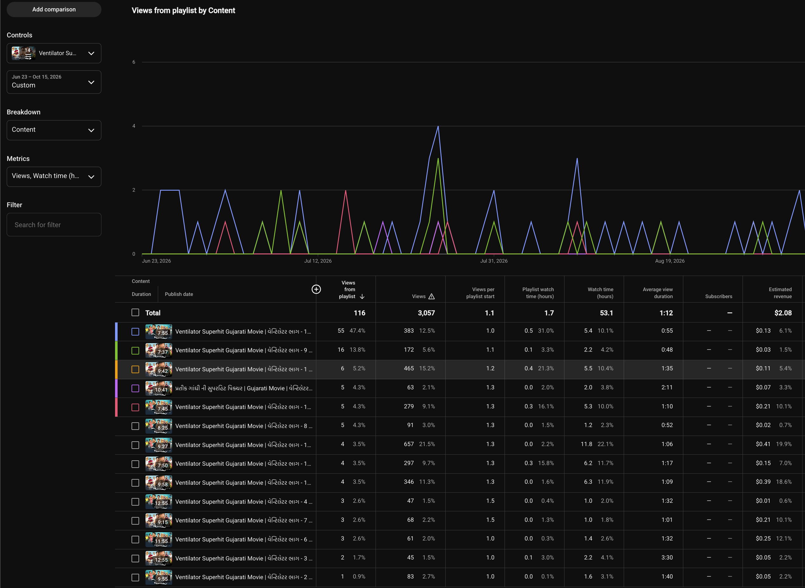

Case 05 · Gujarati platform fit & packaging
Same IP, different platform behaviour
When a title underperforms on one surface, the fix is not always “post more.” It is matching cut length and packaging to how that audience actually watches — and testing thumbnails against this regional catalogue, not generic YouTube defaults.
Context
The multi-format system still needs judgment
Case 04 describes the packaging machine: full, parts, Shorts, and social cuts. This case is about the decisions inside that machine when two platforms disagree on the same film — and when “professional” packaging does not lift performance.
Problem
Copying the same cut across platforms assumes one audience
YouTube and Facebook are not interchangeable screens. Mid-length clips that feel normal on YouTube can stall on Facebook’s scroll; short cuts that work on Facebook can feel thin as a YouTube unit. Thumbnail conventions that look “premium” can underperform for a regional catalogue audience that responds to something closer to the film’s own visual language.
Proof · Ventilator
YouTube mid-form vs Facebook short-form
Ventilator is the clearest platform-split example in this set. On YouTube, longer clips in the roughly 8–9 minute range did not hold the response we needed. On Facebook, shorter cuts in the roughly 1–2 minute range earned a markedly stronger response.
That is not a verdict that “Facebook is better than YouTube.” It is evidence that each platform’s audience arrives with different patience and intent. Phone-scroll viewers reward a fast payoff; YouTube viewers often expect a clearer sit-and-watch unit. Packaging had to follow that difference — same intellectual property, different cut design.

Proof · Thumbnails
Professional packaging did not automatically win CTR
On titles such as Rakhewal and Kutumb, more polished, “professional” thumbnails did not deliver the CTR or view lift expected from conventional YouTube advice.
On Radha Tara Vina Mane Gamtu Nathi and Amar Prem, the approach shifted: thumbnails were kept closer to a raw, film-native look rather than over-designed clickbait. Reach improved without relying on misleading packaging.
The learning is specific to this catalogue and audience: test packaging against how Gujarati film viewers actually click — do not assume metro YouTube thumbnail norms transfer cleanly.


Contrast
When a title already travels — amplify, don’t reinvent
Vikram Thakor films tend to perform across platforms. There the job is to extend a working identity through parts and Shorts, not to redesign the proposition from scratch. Ventilator required platform-specific cuts; Vikram Thakor titles mostly required faithful packaging and volume discipline. Both are strategic calls — they are not the same call.
Takeaway
Platform fit is a diagnosis, not a template
Every platform has a different audience behaviour. Match cut length and packaging to that behaviour. Test thumbnails against the catalogue in front of you. When a title already works everywhere, amplify it; when one surface fails, redesign for that surface — do not force a single cut to do every job.